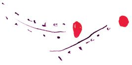

“What this power is I cannot say; all I know is that it exists.”
Alexander Graham Bell (1847-1922)
INVENTOR OF THE TELEPHONE

Life is simple. Your life is made up of only two kinds of things – positive things and negative things. Each area of your life, whether it’s your health, money, relationships, work, or happiness, is either positive or negative to you. You have plenty of money or you lack money. You are brimming with health or you lack health. Your relationships are happy or difficult. Your work is exciting and successful or dissatisfying and unsuccessful. You are filled with happiness or you don’t feel good a lot of the time. You have good years or bad years, good times or bad times, good days or bad days.
If you have more negative things than positive things in your life, then something is very wrong and you know it. You see other people who are happy and fulfilled and whose lives are full of great things, and something tells you that you deserve all that too. And you’re right; you do deserve a life overflowing with good things.
Most people who have a great life don’t realize exactly what it was that they did to get it. But they did do something. They used the power that is the cause of everything good in life . . .
Without exception, every person who has a great life used love to achieve it. The power to have all the positive and good things in life is love!
Love has been talked about and written about since the beginning of time, in every religion, and by every great thinker, philosopher, prophet, and leader. But many of us have not truly understood their wise words. Even though their teachings were specifically for people in their time, their one truth and message to the world is still the same today: love, because when you love you are using the greatest power in the universe.